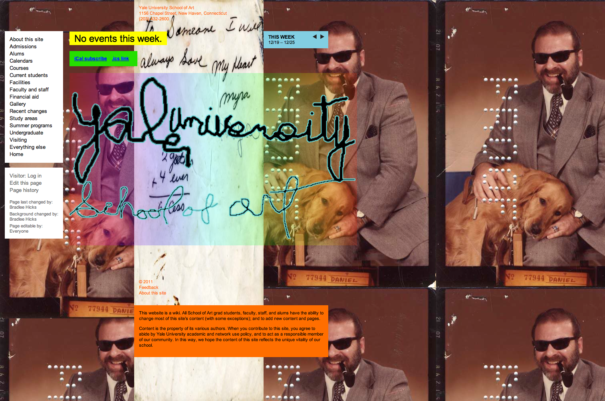
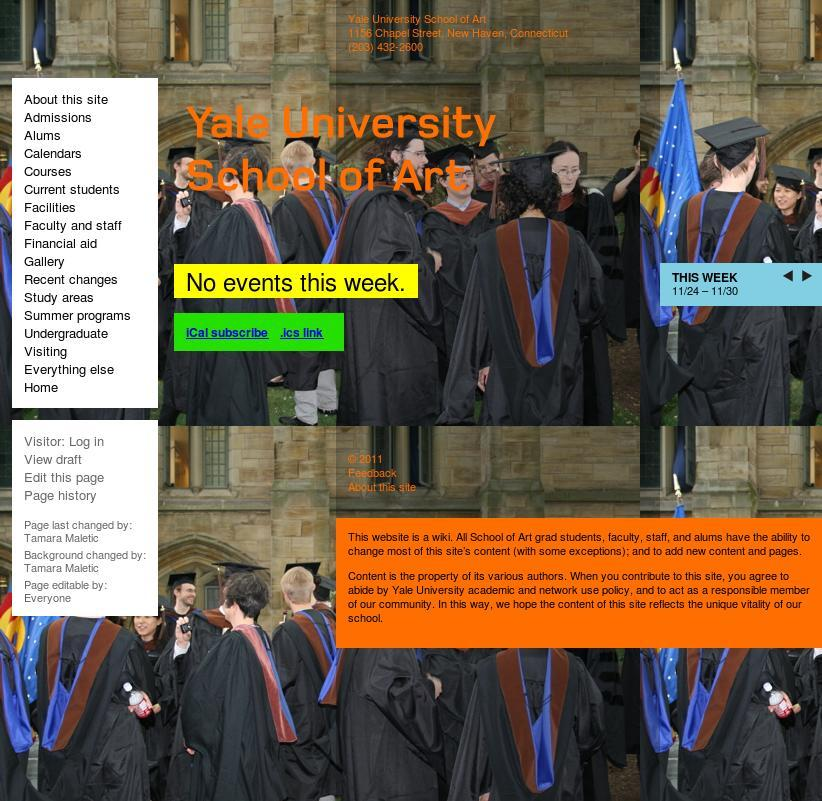
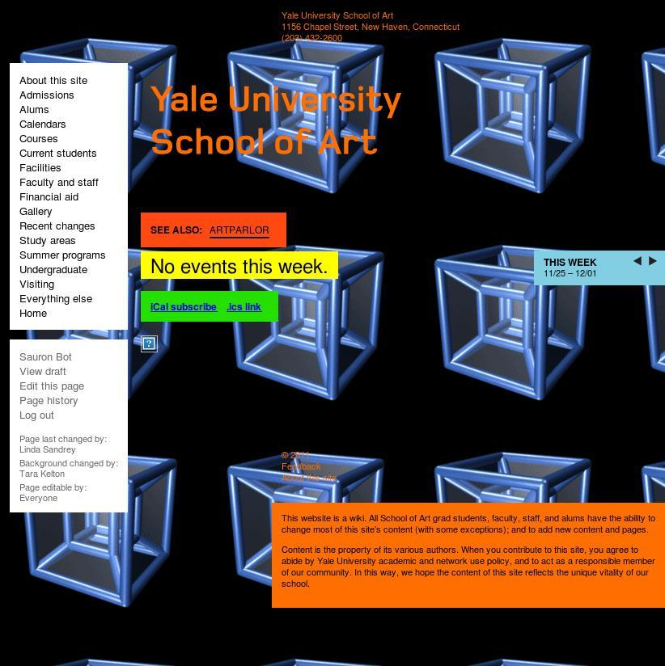
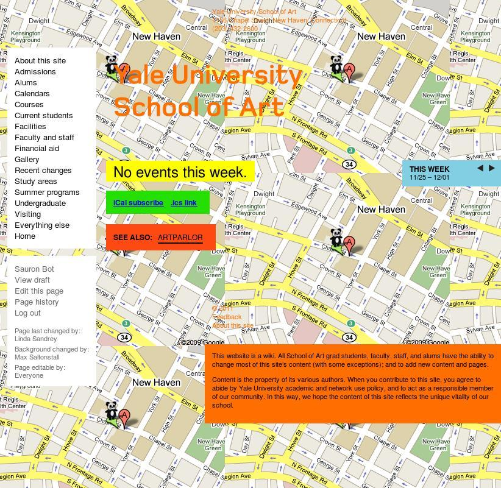
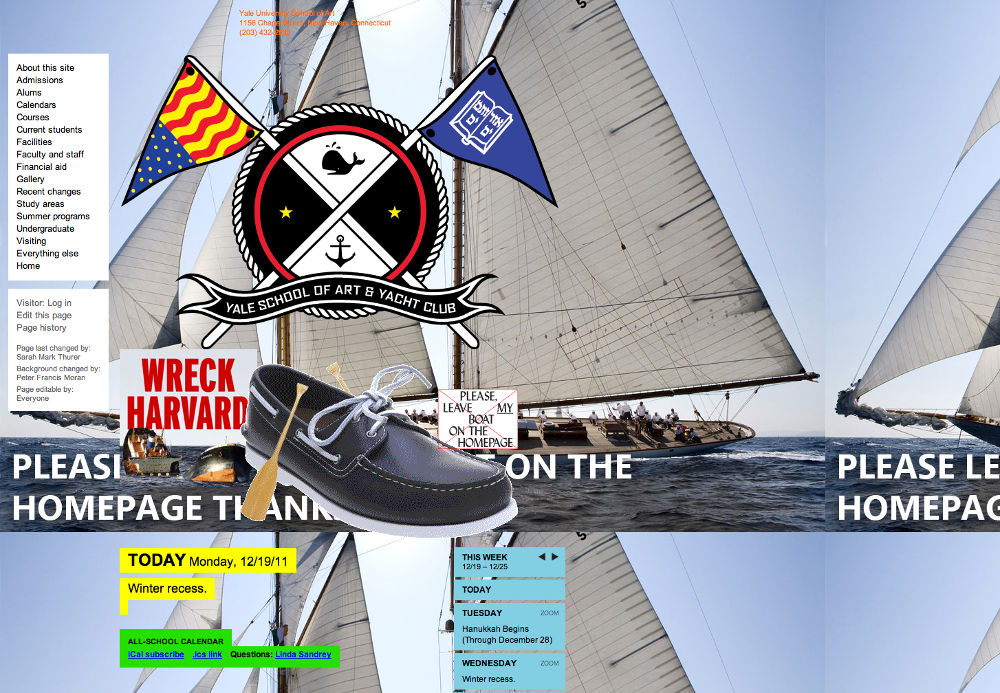

*Linked By Air*





Statuesque
Medium: Website
Client: Yale University
Year: 2007
Exhibition
Our goal was to give the School of Art a website that would change every day, with no staff to do this. To attract prospective students, an art school’s website should have just as much vitality as the art school itself. And for current students, faculty, and staff, an art school’s website should be as much a part of their shared lives as the school’s physical building is.
To accomplish these goals, we made the entire website editable and expandable by all 200+ students, staff, and faculty, with no training and using only a web browser. It’s a custom-built wiki that allows visual as well as textual expression through a system of versatile modules, which allow both a consistent identity for the site, and endless permutation and subversion of that identity.
The following page shows some of the web pages with which the site launched. The subsequent two pages show some web pages that students, staff and faculty have made since the launch.
In 2007, the website received an AIGA “365” Award.